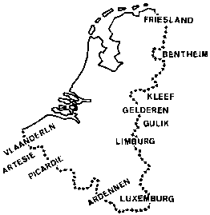

| De vereniging/stichting ZANNEKIN richt de aandacht op de
grensgebieden in Noord-Frankrijk en West-Duitsland, w.o. Frans-Vlaanderen, Artesië,
Picardië, Oost-Friesland, het Eemsland, Lingen, Benthem, West-Munsterland,
Kleef, de Gelderse gebieden tussen Maas en Rijn, Gulik, de Limburgse gebieden
bij Aken, en Luxemburg. Sommige van deze gebieden, die als een krans om
de historische Nederlanden liggen, hebben ooit tot enig Nederlands staatsverband
gehoord, andere hebben op economisch of cultureel gebied nauwe contacten
gehad
en weer andere, en dat zijn dan naast Frans-Vlaanderen vooral de Duitse
grensgebieden, waren tot voor een paar generaties nog Nederlandstalig.
Al deze landstreken hebben samen met Friesland en het Walenland een onmiskenbare
bijdrage geleverd aan het culturele erfgoed en de eigenheid van de Nederlanden.
ZANNEKIN stelt zich tot doel om de historische en de culturele banden met al deze, van ons vervreemde gebieden nader te onderzoeken, weer aan te halen en waar nodig te hernieuwen. Als belangrijkste taak ziet ZANNEKIN het om de belangstelling voor deze gebieden te wekken en tevens het besef te laten herleven dat de huidige grenzen alleen maar een politiek karakter hebben: ze doorsnijden een economische, culturele en historische eenheid. Deze belangstelling kan in de toekomst de basis vormen om binnen het historische kader en met respect voor de christelijke grondslagen van de cultuur van de Nederlanden, te komen tot een nauwere samenwerking met deze gewesten "extra muros". Hiertoe zijn binnen het huidige streven naar een verenigd Europa reële mogelijkheden aanwezig. Binnen het omschreven gebied wordt ook aandacht besteed aan de inheemse taalminderheden. |
 |